ข้อที่ได้ต่ำกว่า 5 คะแนน
ข้อ 5 · ดัชนีความน่าเชื่อถือของฐานข้อมูล GIS
ข้อ 12 · สัดส่วนค่าแรงงบลงทุน/งบทำการ (สยามราช)
สถานะ 4 ต.ค. 69: เบิกจากงบลงทุน 11.95% (เป้า ≥ 20%) ระดับคะแนน 3.39 · ถ้าข้อนี้ได้ 5 คะแนน ภาพรวมจะเป็นประมาณ 4.9844
อันดับในเขต กฟฉ.1 (กฟส. ขนาด XS 73 แห่ง)
ข้อมูลสะสม ม.ค.–ก.ย. 2569 กฟส.นาทม ได้ 4.8612 อยู่อันดับที่ 25 จาก 73 กฟส.(XS) ใน กฟฉ.1 (ส.ค. อันดับ 27) และเป็นอันดับ 1 ของจังหวัดนครพนม · มี 6 กฟส. ที่ได้ 5.0000 เต็ม
| ที่ | กฟส.(XS) จังหวัดนครพนม | ม.ค.–ส.ค. | ม.ค.–ก.ย. |
|---|---|---|---|
| 1 | กฟส.นาทม | 4.7917อันดับ 27 | 4.8612อันดับ 25 |
| 2 | กฟส.นาหว้า | 4.4859อันดับ 57 | 4.7642อันดับ 37 |
| 3 | กฟส.ศรีสงคราม | 4.5415อันดับ 51 | 4.5413อันดับ 53 |
| 4 | กฟส.โพนสวรรค์ | 4.5974อันดับ 48 | 4.4884อันดับ 56 |
| 5 | กฟส.ท่าอุเทน | 4.4546อันดับ 60 | 4.4315อันดับ 59 |
| 6 | กฟส.เรณูนคร | 4.4573อันดับ 59 | 4.3678อันดับ 61 |
| 7 | กฟส.วังยาง | 4.2510อันดับ 70 | 4.3089อันดับ 63 |
| 8 | กฟส.ปลาปาก | 3.8354อันดับ 72 | 4.2167อันดับ 64 |
ผลรายข้อ (Dashboard รอบ ส.ค. และ ก.ย. 2569)
| ข้อ | เกณฑ์วัด | น้ำหนัก | ม.ค.–ส.ค. | ม.ค.–ก.ย. |
|---|---|---|---|---|
| 1. งานตามนโยบาย / งานตามที่ผู้บังคับบัญชามอบหมาย (30%) 8 ข้อ | ||||
| 1.1 | ผู้บริหารสูงสุดของหน่วยงานเป็นผู้นำในการดำเนินกิจกรรมด้านความปลอดภัย PSC | 2 | – | 5.0000 |
| 1.2 | นำโปรแกรมตรวจสอบการปฏิบัติงานด้วยความปลอดภัยสำหรับการปฏิบัติงานในระบบไฟฟ้ามาใช้งาน (WeSafe) | 2 | 5.0000 | 5.0000 |
| 1.3 | ฝึกซ้อมตระหนักด้านความปลอดภัย ผ่านโปรแกรม SPA และ Google Sheet กปภ. | 2 | 5.0000 | 5.0000 |
| 2 | ค่าดัชนีการประสบอุบัติภัยของ กฟภ. | 4 | 5.0000 | 5.0000 |
| 3 | รายได้จากกลุ่มธุรกิจเกี่ยวเนื่อง ไม่รวมรายได้จากค่าพาดสายสื่อสารและกลุ่มธุรกิจอื่น ๆ | 4 | 5.0000 | 5.0000 |
| 4 | การบริหารค่าใช้จ่าย CPI-X | 4 | 5.0000 | 5.0000 |
| 5 | ดัชนีวัดความน่าเชื่อถือของฐานข้อมูลในระบบ GIS ของ กฟฉ.1 | 8 | 4.8900 | ≈4.86*4–5 คะแนน |
| 6 | ความสำเร็จของการดำเนินงานตามแผนปฏิบัติการ | 4 | – | 5.0000 |
| 2. งานตามหน้าที่ความรับผิดชอบ (30%) 11 ข้อ | ||||
| 7.1 | ติดตั้งมิเตอร์ผู้ขอใช้ไฟฟ้า ขนาดไม่เกิน 30 แอมป์ ในเขตชุมชน ภายใน 2 วันทำการ | 3 | 5.0000 | 5.0000 |
| 7.2 | ติดตั้งมิเตอร์ผู้ขอใช้ไฟฟ้า ขนาดไม่เกิน 30 แอมป์ นอกเขตชุมชน ภายใน 5 วันทำการ | 3 | 5.0000 | 5.0000 |
| 8 | ตรวจสอบมิเตอร์ป้องกันหน่วยสูญเสียจากการละเมิดการใช้ไฟฟ้าและการชำรุดของมิเตอร์ | 3 | 5.0000 | 5.0000 |
| 9 | งานตรวจสอบและปิดใบสั่งจากโปรแกรม U-Cube (NL1, NL2) | 2 | 5.0000 | 5.0000 |
| 10 | เร่งรัดจัดเก็บหนี้ค่าไฟฟ้าเอกชนรายย่อยค้างชำระก่อนปี 2569 | 3 | 5.0000 | 5.0000 |
| 11 | เร่งรัดจัดเก็บหนี้ค่าไฟฟ้าเอกชนรายย่อยค้างชำระปี 2569 | 3 | 5.0000 | 5.0000 |
| 12 | สัดส่วนค่าแรงงบลงทุน/งบทำการ (สยามราช) เป้าหมายเบิกจากงบลงทุน ≥ ร้อยละ 20 | 3 | 1.9606 | ≈1.96*1–2 คะแนน |
| 13 | ลดต้นทุนค่าใช้จ่ายใบสั่งงานแก้กระแสไฟฟ้าขัดข้อง (ZOM1) | 2 | 5.0000 | 5.0000 |
| 14 | SAIFI อุปกรณ์ประเภท Drop out Fuse | 3 | – | ยังไม่ประเมิน |
| 15 | ดัชนีจำนวนครั้งที่ไฟฟ้าขัดข้อง (SAIFI) ของระบบจำหน่ายแรงต่ำ | 3 | – | ยังไม่ประเมิน |
| 16 | การจัดทำข้อมูลยานพาหนะในระบบ (Car management system) | 2 | 5.0000 | 5.0000 |
| 3. งานตามความคิดสร้างสรรค์ (20%) 1 ข้อ | ||||
| 17 | รางวัลเชิดชูเกียรติ | 20 | – | 5.0000 |
หน้าจอ Dashboard-KPIs-BI
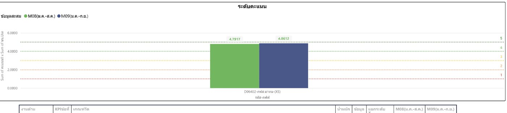
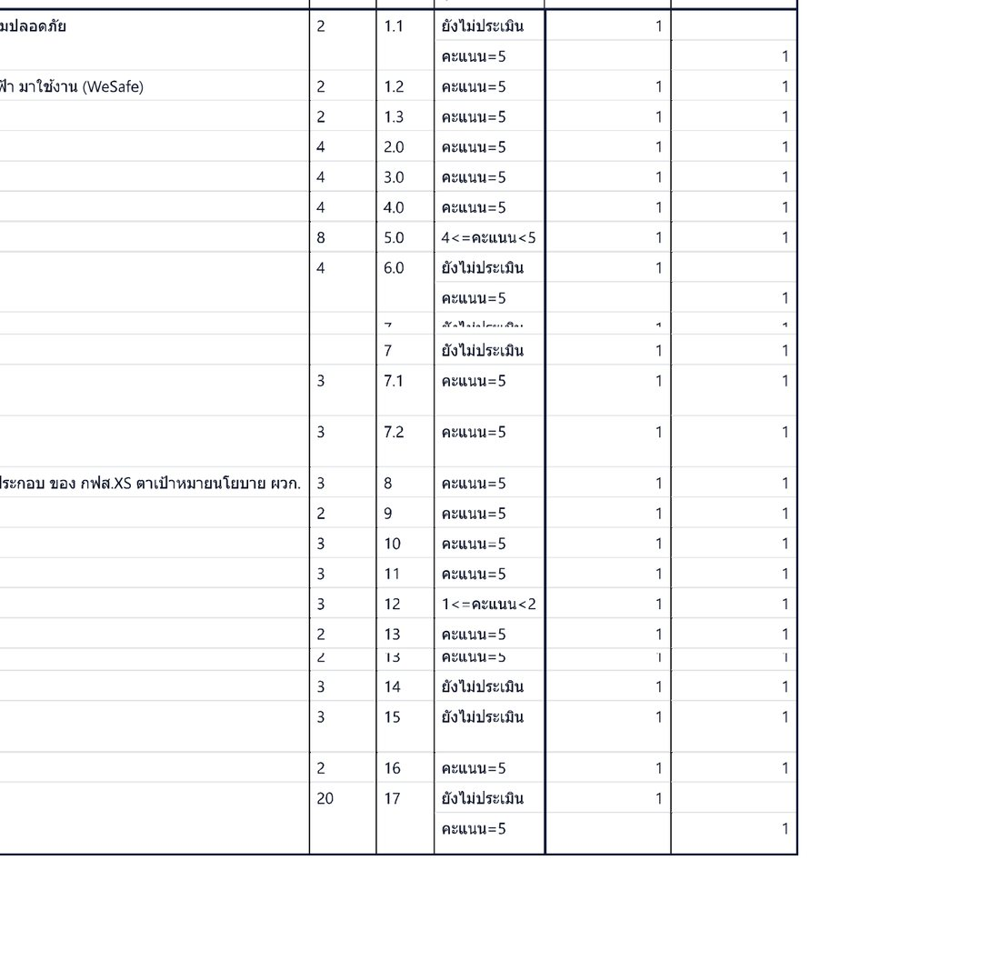
ที่มา: Power BI Dashboard-KPIs-BI (กฟฉ.1 อุดรธานี) หน้า ข้อมูล KPIs ราย กฟส.(XS) · กรอง D06402 · พิมพ์ 29 ต.ค. 2569
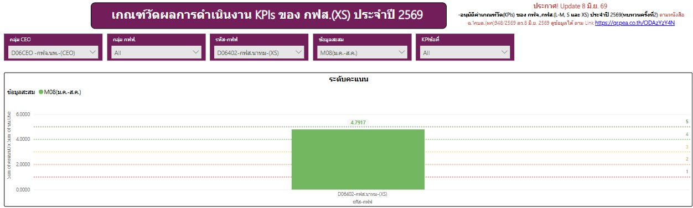
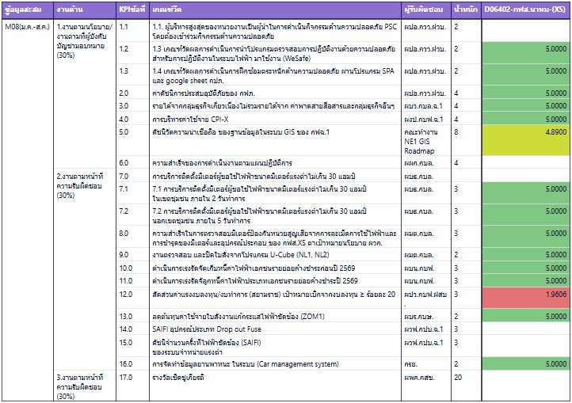
รอบ M08 (ม.ค.–ส.ค. 2569) จากสไลด์ของ กฟส.นาทม
ผลการดำเนินงานรายข้อและหลักฐาน
ผู้บริหารเป็นผู้นำกิจกรรมความปลอดภัย PSC
ผจก.กฟส.นาทม (XS) เป็นผู้นำในการดำเนินกิจกรรมด้านความปลอดภัย PSC 37 จาก 38 สัปดาห์
ระดับคะแนน 5 · ข้อมูลสะสม ม.ค.–ก.ย. (ได้คะแนนครั้งแรกในรอบ ก.ย.)
นำโปรแกรม WeSafe มาใช้งาน
ผลงานการนำโปรแกรมตรวจสอบการปฏิบัติงานด้วยความปลอดภัย (WeSafe) มาใช้งาน คิดเป็นร้อยละ 117.68
ระดับคะแนน 5 · ข้อมูลสะสม ม.ค.–ก.ย.
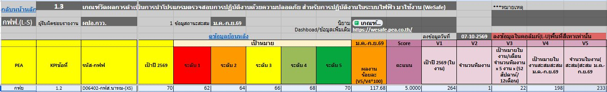
ฝึกซ้อมตระหนักด้านความปลอดภัย (SPA)
ฝึกซ้อมผ่านโปรแกรม SPA และรายงานผลผ่าน Google Sheet กปภ. ครบถ้วน 100%
ระดับคะแนน 5 · ข้อมูลสะสม ม.ค.–ก.ย.
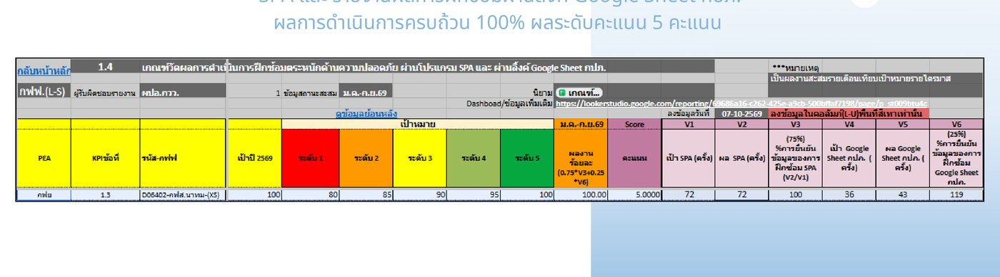
ความปลอดภัยในการปฏิบัติงาน
กฟส.นาทม (XS) ไม่มีอุบัติเหตุเกิดขึ้นจากการทำงาน
ระดับคะแนน 5 · ข้อมูลสะสม ม.ค.–ก.ย.
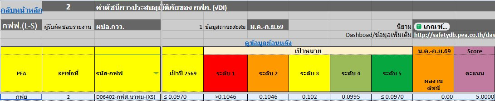
รายได้จากกลุ่มธุรกิจเกี่ยวเนื่อง
เป้าหมายรายได้ทั้งปี 265,000 บาท ผลงานสะสม 961,567 บาท
ระดับคะแนน 5 · ข้อมูลสะสม ม.ค.–ส.ค.
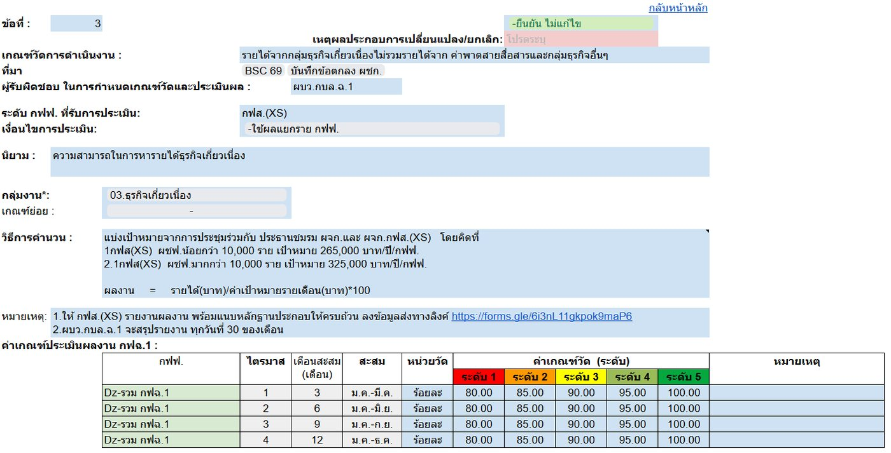
ดัชนีความน่าเชื่อถือของฐานข้อมูล GIS
ประเมินตามดัชนีวัดของ GIS Roadmap กฟฉ.1
Dashboard ก.ย. ช่วง 4–5 คะแนน (ประมาณ ≈4.86; ส.ค. 4.8900)
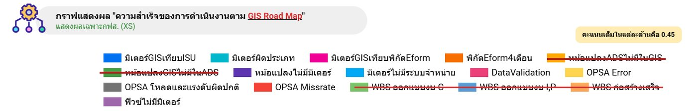
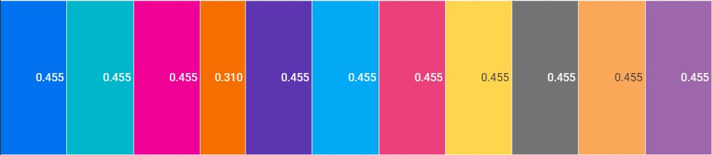
ติดตั้งมิเตอร์ในเขตชุมชน ภายใน 2 วันทำการ
ไม่มีคำร้องขอใช้ไฟฟ้าใหม่ในเขตชุมชน (0 คำร้อง)
ระดับคะแนน 5 · ข้อมูลสะสม ม.ค.–ก.ย.
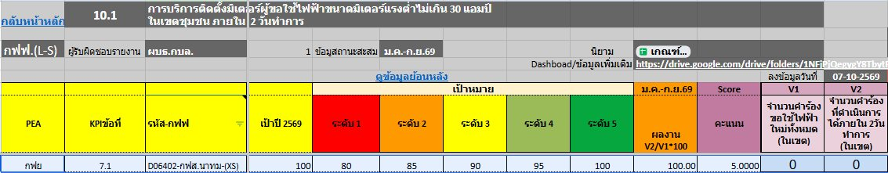
ติดตั้งมิเตอร์นอกเขตชุมชน ภายใน 5 วันทำการ
คำร้องขอใช้ไฟฟ้าใหม่นอกเขตชุมชน 80 คำร้อง ดำเนินการได้ภายใน 5 วันทำการทั้งหมด 80 คำร้อง
ระดับคะแนน 5 · ข้อมูลสะสม ม.ค.–ก.ย.
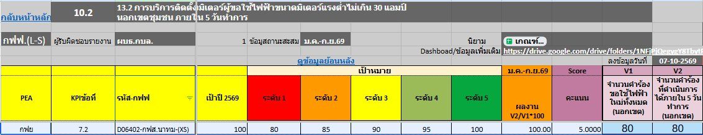
ตรวจสอบมิเตอร์ป้องกันหน่วยสูญเสีย
เป้าตรวจสอบมิเตอร์ปี 2569 จำนวน 56 เครื่อง ตรวจสอบแล้ว 56 เครื่อง
ระดับคะแนน 5 · ข้อมูลสะสม ม.ค.–ก.ย.
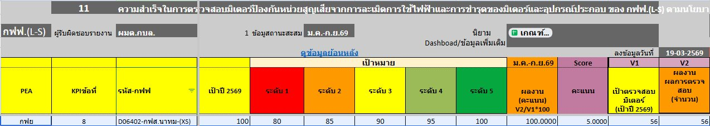
ตรวจสอบและปิดใบสั่ง U-Cube (NL1, NL2)
ตรวจสอบและปิดใบสั่งจากโปรแกรม U-Cube ครบตามเกณฑ์
ระดับคะแนน 5 · ข้อมูลสะสม ม.ค.–ส.ค.
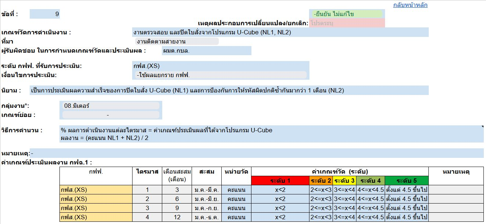
เร่งรัดหนี้ค่าไฟฟ้าค้างชำระก่อนปี 2569
เร่งรัดจัดเก็บหนี้ค่าไฟฟ้าเอกชนรายย่อยค้างชำระก่อนปี 2569 ได้ตามเกณฑ์
ระดับคะแนน 5 · ข้อมูลสะสม ม.ค.–ส.ค.
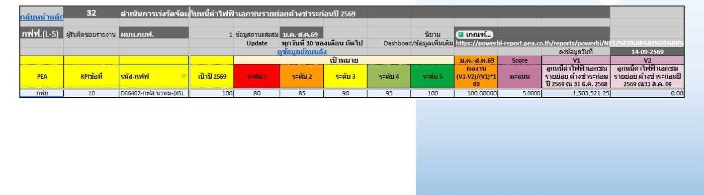
เร่งรัดหนี้ค่าไฟฟ้าค้างชำระปี 2569
เร่งรัดจัดเก็บหนี้ค่าไฟฟ้าเอกชนรายย่อยค้างชำระปี 2569 ได้ตามเกณฑ์
ระดับคะแนน 5.0000 · ข้อมูลสะสม ม.ค.–มิ.ย.
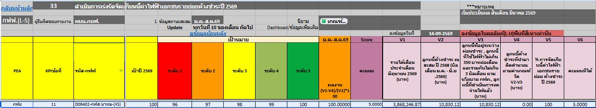
สัดส่วนค่าแรงงบลงทุน/งบทำการ (สยามราช)
เบิกจ่ายค่าแรงจาก WBS 115,765.00 บาท จากค่าแรงทั้งหมด 968,539.43 บาท คิดเป็น 11.95% (เป้าหมาย ≥ 20%)
Dashboard ก.ย. ช่วง 1–2 คะแนน (ส.ค. 1.9606) · สถานะ 4 ต.ค. 69 ระดับคะแนน 3.39 (ยังไม่เข้า Dashboard)
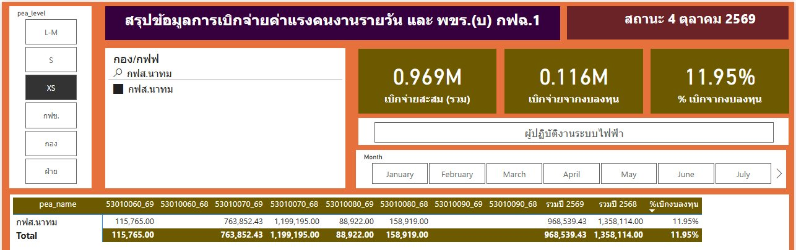
ลดต้นทุนใบสั่งงานแก้ไฟฟ้าขัดข้อง (ZOM1)
ต้นทุนค่าใช้จ่ายจากใบสั่ง ZOM1 ปี 2569 ลดลงจากปี 2568 คิดเป็น 65.27%
ระดับคะแนน 5 · ข้อมูลสะสม ม.ค.–ก.ย.
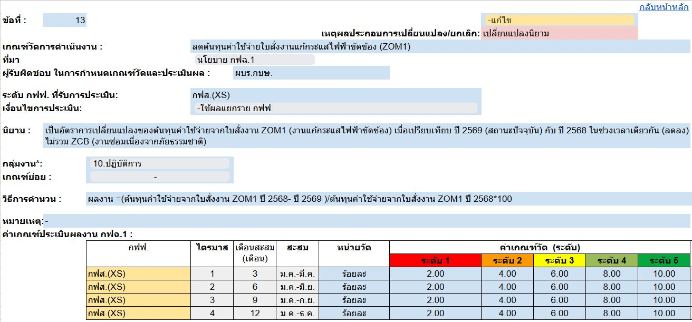
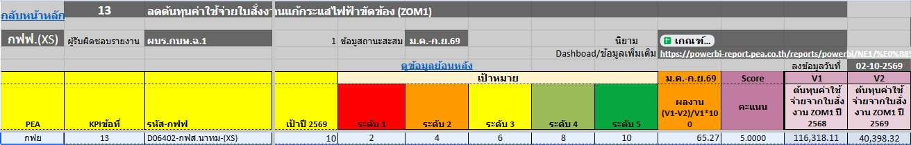
ข้อมูลยานพาหนะในระบบ (Car management system)
จัดทำข้อมูลยานพาหนะในระบบครบตามเกณฑ์
ระดับคะแนน 5 · ข้อมูลสะสม ม.ค.–ส.ค.
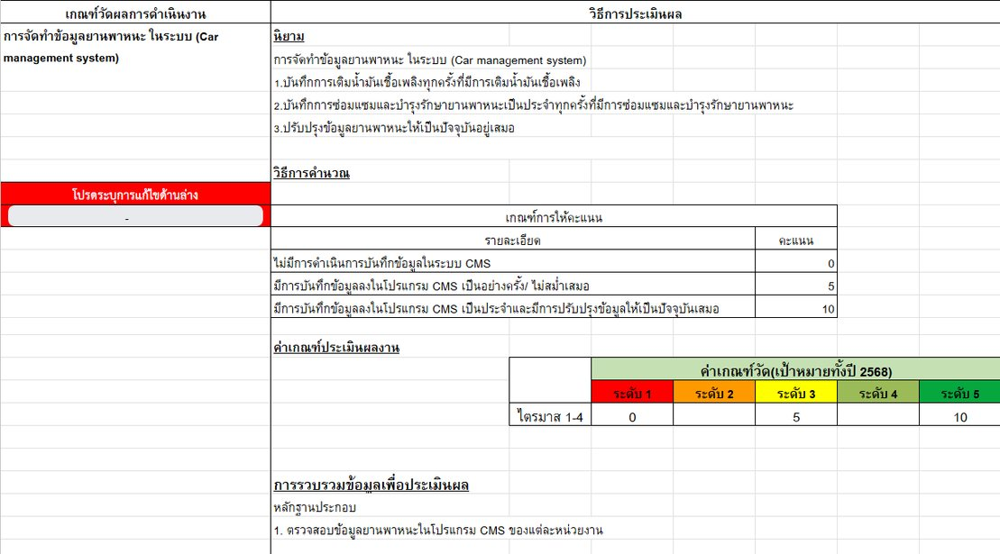
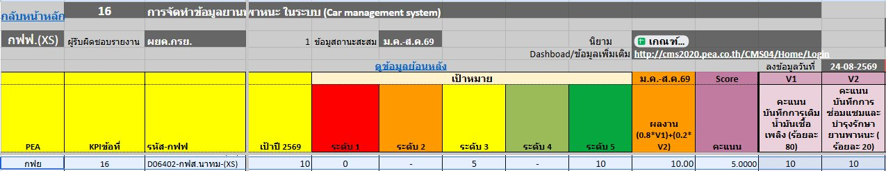
ความสำเร็จตามแผนปฏิบัติการ
ผลการดำเนินงานตามแผนปฏิบัติการ ผลตามแผน 100%
ระดับคะแนน 5 · ได้คะแนนครั้งแรกในรอบ ก.ย.
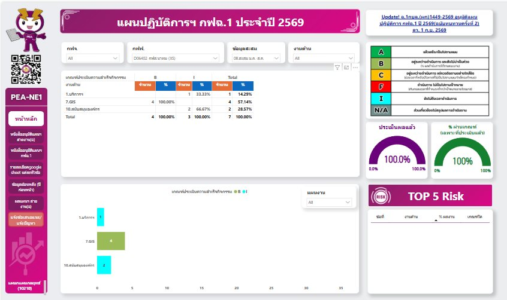
สำรวจดวงโคมไฟสาธารณะ
สำรวจโคมไฟสาธารณะ แผนที่ 1 และแผนที่ 2 ครบ 100%
ผลการสำรวจดวงโคมไฟสาธารณะ กฟฉ.1
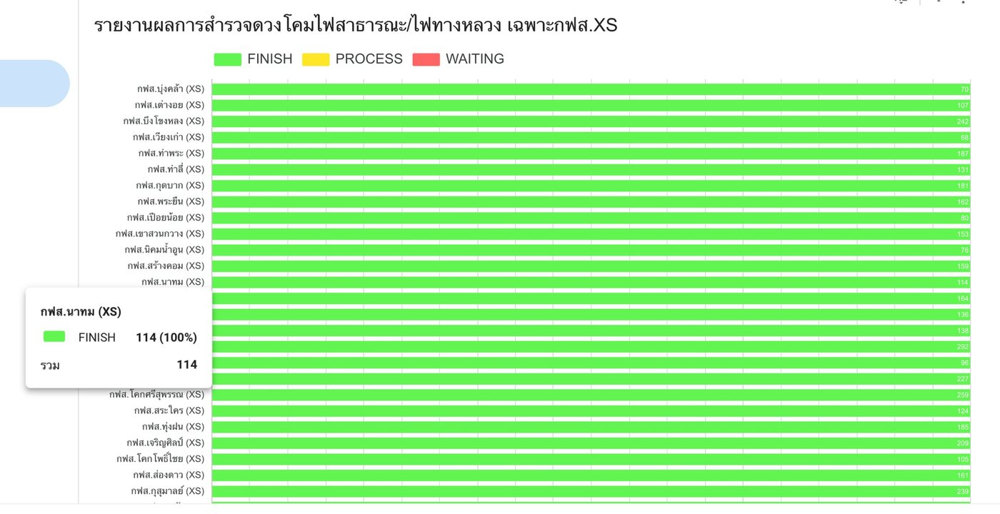
หมายเหตุ
- ระดับคะแนน ก.ย. 4.8612 และ ส.ค. 4.7917 เป็นคะแนนทางการจาก Dashboard; รอบ ก.ย. มีคะแนนเพิ่ม 3 ข้อ คือ 1.1 PSC, 6 แผนปฏิบัติการ และ 17 รางวัลเชิดชูเกียรติ (น้ำหนัก 20) ได้ 5 คะแนนทั้งหมด
- * รอบ ก.ย. Dashboard แสดงข้อ 5 เป็นช่วง 4–5 และข้อ 12 เป็นช่วง 1–2 คะแนน ค่า ≈ เป็นค่าประมาณ (สมมติข้อ 12 เท่ารอบ ส.ค. แล้วคำนวณข้อ 5 ย้อนจากคะแนนรวม 4.8612) · ที่แน่นอนคือ 2 ข้อนี้รวมกันทำให้คะแนนภาพรวมหายไป 0.1388
- อันดับเรียงจากคะแนนรวมของ กฟส.(XS) ทุกแห่งใน Dashboard (ดึงข้อมูล 29 ต.ค. 2569) คะแนนเท่ากันได้อันดับเดียวกัน — Dashboard ไม่ได้แสดงอันดับไว้
- ข้อที่ยังไม่มีคะแนน (14, 15) ไม่ได้แปลว่าได้ 0 คะแนน แต่ยังไม่อยู่ในรอบประเมิน
- รายละเอียดรายข้อบางข้อเป็นสถานะหลังเดือน ส.ค. ตามที่ระบุช่วงข้อมูลไว้ในแต่ละข้อ